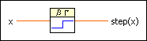
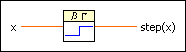
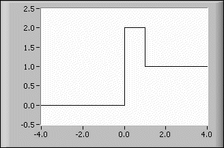

Step Function VI
Owning Palette: Gating Functions VIs
Requires: Full Development System
Generates the step function for any real number x.

 Add to the block diagram Add to the block diagram |
 Find on the palette Find on the palette |
Owning Palette: Gating Functions VIs
Requires: Full Development System
Generates the step function for any real number x.

| Add to the block diagram |
Find on the palette |
 |
x is any real number. |
 |
step(x) is the value of step(x) for the given value of x. |
The following equation defines the step function.
step(x) = 0 if x < 0 and 1 elsewhere
 | Note You can define more complex functions by varying and combining the Step Function, Spike Function, and Square Function VIs, respectively. |
The following illustration shows the graph for step(x) + spike(x) in the interval (–4.0, 4.0)
